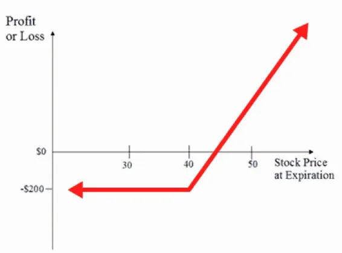

We’re ready to move on to the more sophisticated areas of options trading.
You have tested the waters, made a little cash, and you feel comfortable
with the mechanics of the market. Now, you can start actually buying calls
and begin to hopefully make some real money.
It’s actually simple to buy a call in terms of physically going ahead and
doing it. However, it’s not quite so easy to make a profit. You’re going to
need to start small and dedicate yourself to a learning curve—and you need
to understand that there is a risk involved in buying calls, so, you don’t
want to stake your life savings on your efforts.
My advice is that you build up slowly over time rather than jumping
straight in with several buys in a single day. Be circumspect about your
actions. A small profit is better than no profit at all. Save your riskiest ideas
for when you’ve set up a nest egg with your sells and you feel confident
enough in your own judgment that you’re as sure as it’s possible to be that
your risk will pay off.
As a reminder, what you are actually doing when you buy a call is
purchasing the right to buy the underlying stock if it reaches the strike price
before the deadline. You aren’t obligated to buy it. If you choose not to, all
you have lost is the premium you paid for that right.
The best-case scenario for you, as the buyer, is that the stock suddenly starts
rising at a high speed before the expiration date arrives. You want it to go
beyond the strike price so that, when it comes time to exercise your right,
you are purchasing your stock at a lower price than it is now worth.
Obviously, you then have the option to instantly list that stock as a covered
sell, which would allow you to realize more profit in real money.
That final piece of the puzzle is the important one. As an options trader, you
are not in the business of building a stock portfolio. You don’t really want
to actually own shares—you want to make a profit on them as they pass
through your hands. You want to buy them for less than they are worth and
then sell them for more than they are worth if you are lucky. It’s within
those transactions that your money will be made.
One thing to note before you start buying calls is that you’ll want to wait for the right time. You are no longer interested in a flat market. This time, you want a bull market where stock prices are rising.

What you are looking for is an underlying stock you have faith in. You
think it’s going to rise in value over the next few months. Let’s say you’ve
found a stock that’s currently at $40 and you believe it will continue to rise
steadily. Predicting the rate of its growth, you think it will be at $80 in two
months’ time.
What you would be looking for in that scenario is a call contract that would
allow you to purchase shares for LESS than the $80 you think they will rise
to in two months. You must also juggle the math to make sure that you will
not be paying a premium that would wipe out the profit you would make.
Using the profit and loss diagram as an example, if you are bullish on stock
ABC trading at $35 per share, you might buy calls thirty days from
expiration with a strike price of $40 and a cost of $0.20 per share or $20 per
contract. Let’s do the math and remember that one option contract equals
100 shares.
Purchasing 100 shares of ABC at $35 would cost $3500. However, for the
same $3500 you could buy 175 contracts of $40 calls and control 17,500
shares.
Imagine ABC hits $42 within the next thirty days and the $40 calls trade at
$1.05 just prior to expiration. You’d make about $29,921.10 in a month,
theoretically.
If ABC finishes less than the $40 strike price, the loss is limited to the price
paid for the call option ($200 maximum loss in the diagram).
Bear in mind, of course, that you won’t walk away from a call option with
cash in hand. The profit we are talking about in this case is “intrinsic
value.” You can now take that stock and write a covered call on it,
hopefully selling it, and making a tangible profit in the process. That was
what we were discussing in the previous chapter. As an options trader,
you’re not looking to hold a stock portfolio. You’re purchasing stocks with
call contracts in order to turn around and sell for a profit.